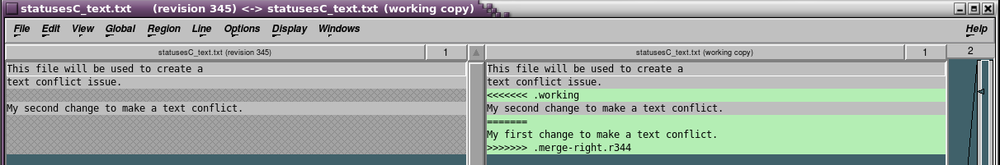
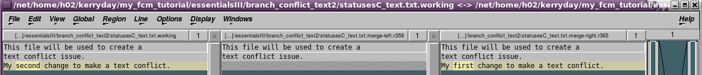

Essentials of FCM
This aims to explain and provide tutorial examples for the following topics:
-
Repository setup
Essential Tutorials I
Essential Tutorials II
Essentials Tutorials I & I example
Essential Tutorials III
Now lets do the Essentials Quiz if you have not already done it at the end of the Fundamentals section to see how much you already know and what we will need to focus on in this section.
Repository setup
Please run the following tutorial repositories script if you have not already done so by running the following
command in a terminal
~/kerryday/fcm_tutorial_docs/bootstrap/docs/repos/tutorial_repo_setup
this will set-up the repositories that you will need for all of the tutorials.
WARNING: This script adds and creates if required keywords the
file ~/.metomi/fcm/keywords.cfg if the file already exists it copies the
orginal to ~/.metomi/fcm/keywords_orig1.cfg.
If you rerun the script it will do the same but re-number older versions of the
configuation file keeping all version.
Please monitor the number of these that you have and tidy up the folder
periodically keeping only the desired versions.
If at any stage the repository gets corrupted then we can start again:
cd # Warning this tears down the whole repository to start from scratch. rm -rf ~/fcm_tutorial rm -rf ~/my_fcm_tutorial # The tutorial repositories script tutorial_repo_setup
All of the tutorial sections are separate and do not depend on each other therefore it is safe to teardown the repositories. The only issue that you encounter is that the revision number may not match, but that is not important for the tutorials.
Essential Tutorials I
What we need to know...
-
Working/Local copy v trunk v branch
-
checked out copy of the trunk or branch that the user is working on in their local space
-
main body of development, originating from the start of the project
-
copy of code derived from a certain point on the trunk and if the changes are successful then they are usually merged back to the trunk
-
Good practice
-
Try to reuse branches
-
Commit changes regularly
-
Create repositories without considering the needs
-
Worry about messing up, changes are revert/reversable
-
Commit ever growing files
-
Commit ASCII files
-
Create new branches when needed
-
Commit byte files
-
Consider that nothing is every really deleted from FCM
-
Commit change regularly
-
Commit ASCII files
-
Create new branches when needed
-
Consider that nothing is every really deleted from FCM
-
Try to reuse branches
-
Commit byte files
-
Commit ever growing files
-
Create repositories without considering the needs
-
Worry about messing up, changes are revert/reversable
-
What are the Valid options?
-
What are the Global options given?
-
Valid options:
- -r [--revision] ARG
- -R [--recursive]
- --depth ARG
- --targets ARG
- --incremental
- --xml
- --changelist [--cl] ARG
-
Global options:
- --username ARG
- --password ARG
- --no-auth-cache
- --non-interactive
- --force-interactive
- --trust-server-cert
- --config-dir ARG
- --config-option ARG
-
What is the revision number?
-
What is the full URL?
-
Who last made a change to the repository?
-
Where is the working copy located?
-
What information do you think you may need to extract at this revision of the code from the repository?
- What is the revision number? 3
- What is the full URL? file:///$HOME/fcm_tutorial/repository/essentialsI/trunk
- Who last made a change to the repository? $LOGNAME
- Where is the working copy located? $HOME/my_fcm_tutorial/essentialsI/trunk
- What information do you think you may need to extract at this revision of the code from the repository? Relative URL and Revision
- If you changed into the directory specific_management what would you expect to be returned?
- If you changed into the directory background_ideas what would you expect to be returned?
- If you changed into the directory specific_management/ what would you expect to be returned? A list of all of the FCM versions controlled directories and files in the specific_management/ directory.
- If you changed into the directory background_ideas/ what would you expect to be returned? Nothing as background_ideas/ is not FCM version controlled directory.
- Revision number of the last commit
- Author of the last commit
- If locked, the letter 'O'. (Use 'svn info URL' to see details)
- Size (in bytes)
- Date and time of the last commit
- What is the revision number?
- What is the full URL?
- Who last made a change to the repository?
- Where is the working copy located?
- What is the revision number? 55
- What is the full URL? file:///$HOME/fcm_tutorial/repository/essentialsI/trunk
- Who last made a change to the repository? Your user id
- Where is the working copy located? ~/my_fcm_tutorial/essentialsI
- They are shorter and easier to remember.
- If the repository needs to be moved then only the keyword definitions need
to be updated (although any working copies you have will still need to be
relocated by issuing a
fcm switch --relocatecommand). - Checkout the branch to our local copy directory
- Switch to the branch copy in our local copy trunk directory.
- We will make some changes to the branch and check them back in.
- We will branch from bt and change to that branch, branch_of_branch, bb and decide that we want to make changes to the bob and commit them to the repository.
- We want to merge the changes from bb to the bt.
- We will add one final change to bt before we commit bt and then merge all the changes to the trunk.
- fcm merge SOURCE
- fcm merge --custom --revision N[:M] SOURCE
fcm merge --custom URL1[@REV1] URL2[@REV2]
- fcm merge --reverse --revision [M:]N
- The best way is to do as we have started doing here. We firstly merged the branch_of_branch to the branch_of_trunk
- now we will merge the branch_of_trunk to the trunk.
- Local changes
- Difference between two revisions
- Difference between two paths
- st column - added/deleted/changed
Below is the list of the statuses, what do you think they could mean?' ' 'A' 'C' 'D' 'I' 'M' 'R' 'X' '?' '!' '~'' ' no modifications - there have been no changes to the file or directory when compared to the committed/checked-in repository version. 'A' Added - A file or directory has been add to the repository, generally no action needs to be taken. 'C' Conflicted - There are conflicts. These must be resolved before the changes can be committed to the repository. This is covered later. 'D' Deleted - A file or directory has been deleted from the repository, generally no action needs to be taken. 'I' Ignored - This item is ignored by then repository, it has been assigned the ignore flag, using the svn:ignore property. For Example: fcm propset svn:ignore "<FILENAME>" . 'M' Modified - A file or directory has been modified compared to the committed/checked-in repository version. 'R' Replaced - A file or directory has been replaced in your working copy. This means the file was scheduled for deletion, and then a new file with the same name was scheduled for addition in its place. Replaced itemscan lead to complications. 'X' an unversioned directory created by an externals definition - This is a marker as with 'I'. '?' item is not under version control - This may be an item that you want to add to the repository. You do not have to, you may want to keep it outside of the repository because it is big or always changing. However, remember that without adding it if the repository is checked out then the check out will not include this item. '!' item is missing (removed by non-svn command) or incomplete - this item may have been deleted by a non-FCM command, you can solve this by using fcm rm -c <FILE/DIRNAME> '~' item is versioned as one kind of object (file, directory, link), but has been replaced by a different kind of object. -Checking the status of the files and directories can be used to highlight forgotten or unexpected changes, for example;
if we had not intended deleting an item, or modifying an item, or just simple forgot to add a new file that we had created, it would provide the information required,
If we notice that we have added/deleted/modified a file unintentionally we can revert the change before we commit it. This is covered in the Revert, merge --reverse sub-section. You can also reverse a change if we have already checked it into the repository, this is also covered in the Revert, merge --reverse sub-section.
- nd column - the status of a file or directory's properties.
' ' no modifications ' C' Conflicted - Properties for this item are in conflict with property updates received from the repository. ' M' Modified - Properties for this item have been modified. - rd column - only populated if the local/working copy is locked.
- th column - only if the item is scheduled for addition-with-history.
- th column - only if the item is switched relative to its parent.
- th column - is populated with lock information.
- th column - only if the item is the victim of a tree conflict.
fcm add <FILE/DIRNAME>- add a file/directoryfcm copy|cp <FILE/DIRNAME>- copy a file/directoryfcm delete|del|remove|rm <FILE/DIRNAME>- delete a file/directoryfcm mkdir <FILE/DIRNAME>- create a file/directoryfcm move|mv|rename|ren <FILE/DIRNAME>- move file/directory- Move to the local/working copy of the trunk of the essentials II repository
- How can we check that we are in trunk of the local/working copy of the repository? What exact part tells us this information?
- List the FCM contents of the directory
- What command will inform us of any local changes and if we need to commit anything to the repository before we checkout a new branch? Is there anything that needs to be done, if so what should we do?
- It would be a good idea to remind ourselves of all the changes that have occurred on the trunk. How many changes have been recorded?
-
Before we checkout the repository to a new branch then to make our lives easier
we should set-up some keywords.
We want to set-up the keyword "esII" for the esssentialsII repository. How can we do this? How can we check this has worked?
- Now lets create a branch called "my_examples_branch" from the trunk using the keyword so that we could be anywhere in the repository. What is the URL created for the branch?
- How can we work on the branch?
- Now to work on the branch my_examples_branch, remember to use the keyword. Move to the branch that we just created, what command and what returned output confirms that we are in the correct location? Record the revision number which we will need it later.
- Edit trunk.txt, create a text file called eb.txt and then include it in the repository using FCM. Erase fb.txt using the FCM command. Check the status and resolve any issues and check the branch back into the repository.
- fcm mkdir a directory called foo, then create a file in the directory called new.txt, fcm copy the file trunk.txt to trunk2.txt, fcm move eb.txt to the foo directory. Check the status and resolve any issues and check the branch back into the repository.
- rm the trunk.txt file, mv the trunk2.txt to foo, make the directory bar (do not use fcm for these commands). Check the status and resolve any issues and check the branch back into the repository. Record the revision number which we will need it later.
- Difference the revisions from question 10 and 13 (70-73), then make a change to foo/eb.txt and use the graphical diff to view the change.
- Merge the examples branch at the previous revision to the trunk.
- Move to the local/working copy of the trunk of the essentials II repository cd ~/my_fcm_tutorial/essentialsII
- How can we check that we are in trunk of the local/working copy of essentialsII? What exact part tells us this information? fcm info
- List the FCM contents of the directory fcm list
- What command will inform us of any local changes and if we need to commit anything to the repository before we checkout a new branch? Is there anything that needs to be done, if so what should we do? fcm status
- How many changes have been recorded? Four, use "fcm log" and count them
- We want to set-up the keyword "esII" for the esssentialsII repository. How can we do this? How can we check this has worked?
- Now lets create a branch called "my_examples_branch" from the trunk using the keyword so that we could be anywhere in the repository. What is the URL created for the branch? fcm bc my_examples_branch fcm:fcm_esII
- How can we work on the branch?
- Now to work on the branch my_examples_branch, remember to use the keyword. Move to the branch that we just created, what command and what returned output confirms that we are in the correct location? Record the revision number which we will need it later.
- Edit trunk.txt, create a text file called eb.txt and then include it in the repository using FCM. Erase fb.txt using the FCM command. Check the status and resolve any issues and check the branch back into the repository.
- fcm mkdir a directory called foo, then create a file in the directory called new.txt, fcm copy the file trunk.txt to trunk2.txt, fcm move eb.txt to the foo director. Check the status and resolve any issues and check the branch back into the repository.
- rm the trunk.txt file, mv the trunk2.txt to foo, make the directory bar (do not use FCM for these commands). Check the status and resolve any issues and check the branch back into the repository. Record the revision number which we will need it later.
- Difference the revisions from question 10 and 13 (70-73), then make a change to foo/eb.txt and use the graphical diff to veiw the change.
- Merge the examples branch at revision the previous revision to the trunk. We need to know the URL and the present revision number so that we can select the previous revision number to merge from
...Some reminders and a bit of little new information for future references.
REMEMBER: $LOGNAME needs or should be your username for accessing the repository. Please either define this before continuing if your system does not or remember to substitute in your username.
Here are some incomplete sentences, read them and try to complete them from the list below:
The trunk of a repository is the version that is the...
The branch of a repository is the version that is the... ... on the trunk and if the changes are successful then they are usually merged back to the trunk.
The working/local copy of a repository is the version that is the...
Pick the correct option to fill the gaps
The trunk of a repository is the version that is the main body of development, originating from the start of the project.
The branch of a repository is the version that is the copy of code derived from a certain point on the trunk and if the changes are successful then they are usually merged back to the trunk.
The working/local copy of a repository is the version that is the checked out copy of the trunk or branch that the user is working on in their local space.
Please sort the following into should and should not:
With FCM we should:
With FCM we should not:
If you need to do anything on the "should not" list then please try not to or please contact the system administrator prior to attempting , in order to discuss the options that are available.
How we can to look things up and debug problems
Some of these commands/functions that follow are in fact Linux based commands/functions and not FCM specific.
I.e., we can use man to display the manual page of a tool.
For example man grep will display the manual page for GREP.
help
With FCM we can use (--)help to explain the functionality of
a command.
fcm help returns help for applications that are included in this
tutorial.
For example: fcm help info or fcm info --help returns the help for the FCM command info.
Now try fcm help info at the command line and answer the following questions:
--verbose
We can increase the verbosity of a command that we are running by appending
--verbose or -v -v --debug to the end to get more
information on what is happening when it is run.
You may find this useful to understand why something is behaving how it is.
Info
Here we will learn about using fcm info to help us with FCM and
to use all of the functions and tools.
Here is an example of the returned output from running the
fcm info command on a FCM local/working copy:
Path: .
Working Copy Root Path: $HOME/my_fcm_tutorial/fundamentals/trunk
URL: file:///$HOME/fcm_tutorial/repository/fundamentals/trunk
Relative URL: ^/fundamentals/trunk
Repository Root: file:///$HOME/fcm_tutorial/repository
Repository UUID: e9517eff-a2e5-4968-80e3-54fb2c43ef33
Revision: 3
Node Kind: directory
Schedule: normal
Last Changed Author: $LOGNAME
Last Changed Rev: 2
Last Changed Date: 2016-01-22 07:51:29 +0000 (Fri, 22 Jan 2016)
Questions on the output above:
As we have already run the tutorial repositories script then we can look at the equivalent directory in our $HOME directory.
cd ~/my_fcm_tutorial/fundamentals/trunk fcm info
Later we will need the information from the fcm info command to
use other FCM commands.
List
Here we will learn about using fcm list to help us with FCM and
to use all of the functions and tools.
fcm list or fcm ls lists the version controlled files
within the directory. Note, from here onwards we will present all the options
as follows: fcm list|ls.
Here is an example of the returned output from running the
fcm list command on a FCM repository:
essential_managment fundamental_managment specific_management
Here is an example of the returned output from running the ls
command on a FCM repository:
background_ideas essential_managment fundamental_managment specific_management
Questions
This command was also used in the Fundamentals tutorial when creating our own repository.
We can repeat it here:
fcm ls file:///$HOME/fcm_tutorial/repository/fundamentals
This lists the changes to the repository, file:///$HOME/fcm_tutorial/repository/fundamentals, and returns the following:
branches/
trunk/
With --verbose appended to the end of the command, the following
fields will be shown for each item:
Don't forget that by using (--) help option than you can
get more information on the command that you are interested in.
Checkout
fcm checkout|co
Check out a copy from the repository to your local directory, providing you with a local/working copy.
Not only can we checkout a copy of the repository from the HEAD (top)
of the trunk but we can also checkout the trunk at a revision number using
URL... .../trunk@<REVISION>
Here we will be using the repository that we created in Fundamentals, or by the tutorial repositories script that we should have run from the Setting-up the tutorial repositories section of this tutorial.
Follow the following instructions:
cd
# make the directory for the checkout project from the repository
mkdir -p ~/my_fcm_tutorial/essentialsI
cd $HOME/fcm_tutorial
# checkout the repository "file:///$HOME/fcm_tutorial/repository/essentialsI" to "~/my_fcm_tutorial/essentialsI"
fcm co file:///$HOME/fcm_tutorial/repository/essentialsI/trunk ~/my_fcm_tutorial/essentialsI
Notice, this is slightly different from how we made the fundamentals directory structure. We are not creating a branches directory, they will all be located at the same level as the trunk to make them easier for this example. The above commands return:
Checked out revision 55.
Remember all revision numbers in these examples are approximate and depend on what aspects and order that you complete the course in.
Now let us use the command fcm info to find out the following
information:
cd ~/my_fcm_tutorial/essentialsI
fcm info
Status
fcm status|stat|st
Return the status of the local/working copy location compared to the version of the repository that we checkout out.
Next we will be making some changes to the trunk of the project esssentialsI
fcm st
This should return nothing as there are no changes to the local copy, (note we should presently be in the directory ~/my_fcm_tutorial/essentialsI).
We will use the fcm st command a lot throughout the exercises, it
is a very helpful tool and should be used every time before attempting a commit.
Now we will make a simple change to the local copy, later we will make more
complicated changes and explain all of the possible statuses returned by
fcm st.
We will now create a text file and then add it to the repository.
cat > whoami.txt << EOF
This is my new file, my name is: ${LOGNAME}
EOF
fcm st
This returns:
? whoami.txt
The ? means that the item is not on the repository yet, so we need to add it:
fcm add whoami.txt
This returns:
A whoami.txt
fcm st
Now returns:
A whoami.txt
Where the A means that the file whoami.txt has been added locally.
Commit
fcm commit|ci
Commit/Check-in code from the local/working copy to the repository.
Now we want to commit/check-in the changes back to the repository so we can use
the FCM command fcm ci.
fcm ci
This invokes a text editor with the following:
--Add your commit message ABOVE - do not alter this line or those below--
--Change summary (not part of commit message)--
[Root: file:///$HOME/fcm_tutorial/repository]
[Project: essentialsI]
[Branch : trunk]
[Sub-dir: ]
A trunk/whoami.txt
Again add an appropriate comment to the file and save and close. Enter "y" when promoted to commit the changes. By following these five steps we should see something like:
[info] vi: starting commit message editor...
Change summary:
--------------------------------------------------------------------------------
[Root : file:///$HOME/fcm_tutorial/repository]
[Project: essentialsI]
[Branch : trunk]
[Sub-dir: ]
A whoami.txt
--------------------------------------------------------------------------------
Commit message is as follows:
--------------------------------------------------------------------------------
Adding a text file with my name in it.
--------------------------------------------------------------------------------
*** WARNING: YOU ARE COMMITTING TO THE TRUNK.
*** Please ensure that your change conforms to your project's working practices.
Would you like to commit this change?
Enter "y" or "n" (or just press <return> for "n"): y
Adding whoami.txt
Transmitting file data .
Committed revision 56.
Updating '.':
At revision 56.
Try using fcm st, what do you expect to see? Where you correct?
What changes would you expect to see when you run fcm info?
fcm st should return nothing.
fcm info should show an increase in the revision number.
Log
To show the log messages for a set of revisions and/or paths we can use
the command fcm log.
In the present directory it should return something like this:
------------------------------------------------------------------------
r2 | $LOGNAME | 2016-01-20 16:34:15 +0000 (Wed, 20 Jan 2016) | 2 lines
Adding a text file.
------------------------------------------------------------------------
r1 | $LOGNAME | 2016-01-20 14:26:45 +0000 (Wed, 20 Jan 2016) | 3 lines
My own repository for the FCM tutorials.
FOO: new project.
------------------------------------------------------------------------
Use the (--)help option to find out all of the other options that
we can append to the fcm log.
Keywords
These can be used for URLs and Revisions.
URL keywords are the most commonly used type of keywords. They are used to specify URLs in FCM commands.
We can consider them to be like short-hand or short-cuts to our full URL.
Keywords can be defined in the FCM keyword configuration file (i.e. $FCM/etc/fcm/keyword.cfg and $HOME/.metomi/fcm/keyword.cfg).
For example in our .cfg file in our $HOME directory we can define a keyword as follows:
location{primary}[um] = svn://fcm2/UM_svn/UM
now we can abbreviate the URL as in the following examples:
# fcm ls svn://fcm2/UM_svn/UM
fcm ls fcm:um
# fcm ls svn://fcm2/UM_svn/UM/trunk
fcm ls fcm:um_tr # OR: fcm ls fcm:um-tr
# fcm ls svn://fcm2/UM_svn/UM/branches
fcm ls fcm:um_br # OR: fcm ls fcm:um-br
# fcm ls svn://fcm2/UM_svn/UM/tags
fcm ls fcm:um_tg # OR: fcm ls fcm:um-tg
There are two main advantages for using URL keywords, what do you think they could be?
Much like URL keywords we can use Revision keywords to specify a revision number in FCM commands.
Revision keywords, like URL keywords, can be used anywhere a revision number or URL can be used.
Each Revision keyword is associated with a URL keyword and therefore can only be used when referring to that specified repository.
For example, we can define a Revision keyword in the .cfg by added to the file like this:revision[fcm:vn1.0] = 112 If we did this then the following commands would be equivalent:
fcm log -r 112 svn://fcm1/FCM_svn/trunk
and
fcm log -r vn1.0 fcm:fcm_tr
To print all the registered keywords for a (URL) location we can use the
following FCM command: fcm keyword-print|kp.
Further, we can print the location and revision keywords for a given project, for example, to print the keywords for the project "UM", type:
fcm keyword-print fcm:um.
We will set-up and use a keyword for our repository later in the tutorial.
Essential Tutorials II
Branch
What does branch mean in terms of a version controlled repository? (Think back to the General Info section.)
-
The branch of a repository is the version that is the copy of code derived from a certain point on the trunk.
It allows us to work in parallel to other changes.
Here we will cover: fcm branch-create|bcreate|bc and
fcm bc --branch-of-branch|bob.
In later sections we will cover: fcm branch-diff|bdiff|bdi,
fcm branch-list|blist|bls and
fcm branch-delete|bdelete|bdel
Branch-create
This creates a branch with the name specified in the command from the SOURCE (URL) that has been provided.
fcm bc [OPTIONS] NAME [SOURCE]
This command allows us to branch not only from the HEAD of the trunk, but as
with fcm co, we can branch from a specified revision.
We will now create our first branch in the ~/my_fcm_tutorial/essentialsII/trunk/ directory:
# Checkout the trunk of essentials II to the local copy.
fcm co file:///$HOME/fcm_tutorial/repository/essentialsII/trunk ~/my_fcm_tutorial/essentialsII/trunk
# This returns a "Checked out revision 56" message.
# Move to the directory.
cd ~/my_fcm_tutorial/essentialsII/trunk
# create a branch of the trunk in the current directory called "my_first_branch"
fcm bc my_first_branch
This invokes an editor, add an appropriate commit/log entry then save and close.
The following should be returned once we have agreed to create the branch:
[info] Source: file:///$HOME/fcm_tutorial/repository/essentialsII/trunk@8 (10)
[info] vi: starting commit message editor...
Change summary:
--------------------------------------------------------------------------------
A file:///$HOME/fcm_tutorial/repository/essentialsII/branches/dev/$LOGNAME/r8_my_first_branch
--------------------------------------------------------------------------------
Commit message is as follows:
--------------------------------------------------------------------------------
This will be my first branch for the FCM tutorial.
Created /essentialsII/branches/dev/$LOGNAME/r8_my_first_branch from /essentialsII/trunk@8.
--------------------------------------------------------------------------------
Create the branch?
Enter "y" or "n" (or just press <return> for "n") y
Committed revision 57.
[info] Created: file:///$HOME/fcm_tutorial/repository/essentialsII/branches/dev/$LOGNAME/r8_my_first_branch
Note here that the revision number has increased even though we have not changed the trunk and only branched from it. However, we have made a change to the repository as a whole entity by creating our branch.
We could have branched from somewhere other than the HEAD of the trunk by appending @revision or specifying branch for example:
# fcm bc my_first_branch file://$HOME/fcm_tutorial/repository/essentialsII/trunk@6
In this example we are only going to branch from the HEAD of the trunk.
One of the options for fcm bc is
--branch-of-branch.
This will be presented below for use with the next part of this
sub-section, switch.
--branch-of-branch
If this option is specified and the SOURCE is a branch, then the command will create a new branch from the SOURCE branch. Otherwise, the branch is created from the trunk.
Working on a branch - two techniques
There are two ways of working on the branch that we just created.
# Change the command to include your username or use $LOGNAME.
fcm co file:///$HOME/fcm_tutorial/repository/essentialsII/branches/dev/$LOGNAME/r8_my_first_branch \
~/my_fcm_tutorial/essentialsII/my_first_branch
Checked out revision 57.
cd ..
~/my_fcm_tutorial/essentialsII
ls
my_first_branch trunk
We could now change to the directory my_first_branch/ and create
a branch from that branch using the command
fcm bc --bob my_second_branch and again checkout that branch and
move into that directory.
This style is not "best working practice" therefore we will only use the
other technique in this tutorial.
We will try this in the following sub-section, switch.
switch
This can be summarised as updating the local/working copy to mirror a new URL within the repository.
fcm switch|sw along with the URL(@REVISION) or trunk(@REVISION)
branchname(@REVISION) the local copy will be "switched" from the present local
copy to the requested URL/trunk/branchname(@REVISION).
Now we will create a new branch in the trunk of essentialsII and then switch to the branch that we have created, branch_of_trunk, bt.
cd ~/my_fcm_tutorial/essentialsII/trunk
We should check the working/local copy to make sure that it is committed/checked-in to the repository, then check what part of the repository the local/working copy is working/checked out from. How do you think we can carry out the checks?
fcm st
This should return nothing if the version matches that on the repository.
fcm info
This should return something similar to this:
Path: .
Working Copy Root Path: ~/my_fcm_tutorial/essentialsII/trunk
URL: file:///$HOME/fcm_tutorial/repository/essentialsII/trunk
Relative URL: ^/essentialsII/trunk
Repository Root: file:///$HOME/fcm_tutorial/repository
Repository UUID: e9517eff-a2e5-4968-80e3-54fb2c43ef33
Revision: 56
Node Kind: directory
Schedule: normal
Last Changed Author: $LOGNAME
Last Changed Rev: 8
Last Changed Date: 2016-01-22 10:55:04 +0000 (Fri, 22 Jan 2016)
Here the URL ends with trunk showing that the local copy is the trunk version of the repository.
Firstly, lets add a text file to the trunk version of the repository:
cat > trunk.txt << EOF
A text file 1, trunk
EOF
# check the status of the repository
fcm st
? trunk.txt
# We need to add the file, remember the -q here is to suppress the
# returned output.
fcm add trunk.txt -q
fcm ci
# Add a commit message, save and close the editor and accept the changes.
[info] vi: starting commit message editor...
Change summary:
--------------------------------------------------------------------------------
[Root : file:///$HOME/fcm_tutorial/repository]
[Project: essentialsII]
[Branch : trunk]
[Sub-dir: ]
A trunk.txt
--------------------------------------------------------------------------------
Commit message is as follows:
--------------------------------------------------------------------------------
Adding my test for the trunk.
--------------------------------------------------------------------------------
*** WARNING: YOU ARE COMMITTING TO THE TRUNK.
*** Please ensure that your change conforms to your project's working practices.
Would you like to commit this change?
Enter "y" or "n" (or just press <return> for "n"): y
Adding trunk.txt
Transmitting file data .
Committed revision 58.
Updating '.':
At revision 58.
Now to create a new branch
fcm bc branch_trunk
Add a comment, save and close and accept the create branch, it should return:
[info] Source: file:///$HOME/fcm_tutorial/repository/essentialsII/trunk@58 (58)
[info] vi: starting commit message editor...
Change summary:
--------------------------------------------------------------------------------
A file:///$HOME/fcm_tutorial/repository/essentialsII/branches/dev/$LOGNAME/r58_branch_trunk
--------------------------------------------------------------------------------
Commit message is as follows:
-------------------------------------------------------------------------------
Creating a branch from the trunk.
Created /essentialsII/branches/dev/$LOGNAME/r58_branch_trunk from /essentialsII/trunk@58.
--------------------------------------------------------------------------------
Create the branch?
Enter "y" or "n" (or just press <return> for "n") y
Committed revision 58.
[info] Created: file:///$HOME/fcm_tutorial/repository/essentialsII/branches/dev/$LOGNAME/r58_branch_trunk
This time we are not going to checkout the branch to a directory.
We are going to use the fcm sw command.
Now we can switch to the branch in the trunk folder using the
fcm sw command and the name of the file created from the output:
fcm sw file:///$HOME/fcm_tutorial/repository/essentialsII/branches/dev/$LOGNAME/r58_branch_trunk
It will return a message like this: At revision 59. We can check that we have moved to the branch by:
fcm info
Where it shows that we are now looking a branch_trunk in the trunk directory, by the Relative URL.
Path: .
Working Copy Root Path: $HOME/my_fcm_tutorial/essentialsII/trunk
URL: file:///$HOME/fcm_tutorial/repository/essentialsII/branches/dev/$LOGNAME/r58_branch_trunk
Relative URL: ^/essentialsII/branches/dev/$LOGNAME/r58_branch_trunk
Repository Root: file:///$HOME/fcm_tutorial/repository
Repository UUID: e9517eff-a2e5-4968-80e3-54fb2c43ef33
Revision: 59
Node Kind: directory
Schedule: normal
Last Changed Author: $LOGNAME
Last Changed Rev: 59
Last Changed Date: 2016-01-22 14:09:59 +0000 (Fri, 22 Jan 2016)
We can see by listing the contents that the branch, branch_trunk contains the text file trunk.txt, it contains all that was present on the trunk version of the repository at the time of the checkout. In the tutorial Essentials III - Update we will learn how to update our repositories when changes have been made on them by others or while we are working on a different part of the repository.
To switch back to the trunk we use:
fcm sw trunk
It will return a message like this: At revision 59..
fcm info will return:
Path: .
Working Copy Root Path: $HOME/my_fcm_tutorial/essentialsII/trunk
URL: file:///$HOME/fcm_tutorial/repository/essentialsII/trunk
Relative URL: ^/essentialsII/trunk
Repository Root: file:///$HOME/fcm_tutorial/repository
Repository UUID: e9517eff-a2e5-4968-80e3-54fb2c43ef33
Revision: 59
Node Kind: directory
Schedule: normal
Last Changed Author: $LOGNAME
Last Changed Rev: 58
Last Changed Date: 2016-01-22 10:55:04 +0000 (Fri, 22 Jan 2016)
Note that the revision number keeps increasing with each change to the repository regardless of whether the change affects the files that we are working on, but not each time that we switch repository versions.
Now to switch back to our branch, branch_trunk, add a text file and commit the changes.
Then we will create a branch of a branch, switch back to branch of the branch, add a text file and commit the changes. This will them lead us on to the next sub-section, Merge.
fcm sw file:///$HOME/fcm_tutorial/repository/essentialsII/branches/dev/$LOGNAME/r58_branch_trunk
# Returns "At revision 59."
cat > branch.txt << EOF
This is a branch of my trunk
EOF
fcm add branch.txt -q
fcm ci
# Add a commit message (e.g. Adding my branch text file.), close, save and
# accept.
fcm bc --bob branch_of_branch
# Add a commit message (e.g. My branch of the branch branch_trunk.), close,
# save and accept
fcm sw file:///$HOME/fcm_tutorial/repository/essentialsII/branches/dev/$LOGNAME/r60_branch_of_branch
# To check we have changed to bob.
fcm info
# To check that we have both the files, trunk.txt from the trunk and branch.txt
# from the branch, branch_trunk.
ls
# Now add a text file for this branch of a branch.
cat > bob.txt << EOF
This was my change from my branch of the branch
EOF
fcm add bob.txt -q
fcm ci
# Add a commit message (e.g. Adding my branch of branch text file.), close,
# save and accept.
# change back to the branch_trunk part of the repository.
fcm sw file:///$HOME/fcm_tutorial/repository/essentialsII/branches/dev/$LOGNAME/r58_branch_trunk
# This returns:
D bob.txt
Updated to revision 62.
An A returned from fcm st means that a file has
been added. What do you think the D could mean?
Remember we just switched back to the branch of the trunk version of the
repository.
At this stage we want to merge the branch_of_branch changes to the branch_trunk repository before we switch to the trunk and then merge in those changes too.
Merge
fcm merge can be used to merge in the changes from a source to
the local/working copy.
The following options are available in fcm merge:
Here we will complete a tutorial on 1. and discuss using 2., 3. is covered in Essentials III - Revert, merge --reverse
We should be in the directory
~/my_fcm_tutorial/essentialsII/trunk, if not please change
(cd) to that directory now.
fcm_info should show that we are in the branch
branch_trunk and fcm st should show that
there are no differences between the local copy and the repository.
A list of the contents of the directory should show two files,
trunk.txt and branch.txt.
Now we want to merge in our changes that we made in the branch of a branch, "bb". To do this we will use the fcm merge command.
fcm merge file:///$HOME/fcm_tutorial/repository/essentialsII/branches/dev/$LOGNAME/r60_branch_of_branch
# enter "y" to accept the merge.
Eligible merge(s) from /essentialsII/branches/dev/$LOGNAME/r60_branch_of_branch@62: 62
--------------------------------------------------------------------------------
Merge: /essentialsII/branches/dev/$LOGNAME/r60_branch_of_branch@62
c.f.: /essentialsII/branches/dev/$LOGNAME/r58_branch_trunk@60
-------------------------------------------------------------------------dry-run
--- Merging r61 through r62 into '.':
A bob.txt
-------------------------------------------------------------------------dry-run
Would you like to go ahead with the merge?
Enter "y" or "n" (or just press <return> for "n"): y
Merge succeeded.
--------------------------------------------------------------------------actual
--- Merging r61 through r62 into '.':
A bob.txt
--- Recording mergeinfo for merge of r61 through r62 into '.':
U .
--------------------------------------------------------------------------actual
This was a basic merge with only one possible option for merging.
If we list the files in the directory we will see that we now have all three of the text files, the one from the trunk, branch and bob. You may also have a #commit message# - this is from the merge and will be removed by the system once the changes are commited to the repository.
The next merge will inform us that we have options of different revisions that we can merge into our local/working copy. We will do this in a later tutorial.
Switch to the trunk of the repository and then merge in all of the changes that have been made.
Before we do that what do you think we should do next?
fcm st
fcm ci
Now we can switch to the trunk and merge in the branch of the trunk. Try this yourself, use the "Help" if needed.
fcm sw trunk
D bob.txt
D branch.txt
U .
Updated to revision 63.
fcm merge file:///$HOME/fcm_tutorial/repository/essentialsII/branches/dev/$LOGNAME/r58_branch_trunk
Eligible merge(s) from /essentialsII/branches/dev/$LOGNAME/r58_branch_trunk@63: 63 60
Enter a revision (or just press <return> for "63"):
# This gives us the option of two different revisions to merge, 63 60.
# As we want to merge in all of the changes we will select 63.
# And accept the merge changes.
--------------------------------------------------------------------------------
Merge: /essentialsII/branches/dev/$LOGNAME/r58_branch_trunk@63
c.f.: /essentialsII/trunk@58
-------------------------------------------------------------------------dry-run
--- Merging r59 through r63 into '.':
A bob.txt
A branch.txt
U .
-------------------------------------------------------------------------dry-run
Would you like to go ahead with the merge?
Enter "y" or "n" (or just press <return> for "n"): y
Merge succeeded.
--------------------------------------------------------------------------actual
--- Merging r59 through r63 into '.':
A bob.txt
A branch.txt
U .
--- Recording mergeinfo for merge of r59 through r63 into '.':
G .
--------------------------------------------------------------------------actual
fcm st
# This returns that there are changes compared to the checked in version of the
# trunk and that both bob.txt and branch.txt have been add, as we intended.
# We should now commit our changes to the trunk repository if we want to keep
# them.
fcm ci
[info] vi: starting commit message editor...
Change summary:
--------------------------------------------------------------------------------
[Root : file:///$HOME/fcm_tutorial/repository]
[Project: essentialsII]
[Branch : trunk]
[Sub-dir: ]
M .
A + bob.txt
A + branch.txt
--------------------------------------------------------------------------------
Commit message is as follows:
--------------------------------------------------------------------------------
Merged in the branch of the trunk which had had the changes from bob added.
Merged into /essentialsII/trunk: /essentialsII/branches/dev/$LOGNAME/r58_branch_trunk@63 cf. /essentialsII/trunk@58
--------------------------------------------------------------------------------
*** WARNING: YOU ARE COMMITTING TO THE TRUNK.
*** Please ensure that your change conforms to your project's working practices.
Would you like to commit this change?
Enter "y" or "n" (or just press <return> for "n"): y
Sending .
Adding bob.txt
Adding branch.txt
Committed revision 64.
Updating '.':
At revision 64.
Merge from a different branch. For example, from my_first_branch.
cd ~/my_fcm_tutorial/essentialsII/
# Check that you are on the trunk.
fcm info
# List the available branches.
fcm bls
# Switch to that branch to make the changes.
fcm sw file:///$HOME/fcm_tutorial/repository/essentialsII/branches/dev/$LOGNAME/r8_my_first_branch
cat > fb.txt << EOF
This is a text file made in my_first_branch
EOF
fcm add fb.txt -q
fcm ci
# Add a message, save, close and accept commit.
[info] vi: starting commit message editor...
Change summary:
--------------------------------------------------------------------------------
[Root : file:///$HOME/fcm_tutorial/repository]
[Project: essentialsII]
[Branch : branches/dev/$LOGNAME/r8_my_first_branch]
[Sub-dir: ]
A fb.txt
--------------------------------------------------------------------------------
Commit message is as follows:
--------------------------------------------------------------------------------
Adding a first branch text file.
--------------------------------------------------------------------------------
Would you like to commit this change?
Enter "y" or "n" (or just press <return> for "n"): y
Adding fb.txt
Transmitting file data .
Committed revision 65.
Updating '.':
At revision 65.
# We will need the URL for the next stage so we can use...
fcm info
fcm sw trunk
fcm merge file:///$HOME/fcm_tutorial/repository/essentialsII/branches/dev/$LOGNAME/r8_my_first_branch
Eligible merge(s) from /essentialsII/branches/dev/$LOGNAME/r8_my_first_branch@65: 65
--------------------------------------------------------------------------------
Merge: /essentialsII/branches/dev/$LOGNAME/r8_my_first_branch@65
c.f.: /essentialsII/trunk@8
-------------------------------------------------------------------------dry-run
--- Merging r57 through r65 into '.':
A fb.txt
-------------------------------------------------------------------------dry-run
Would you like to go ahead with the merge?
Enter "y" or "n" (or just press <return> for "n"): y
Merge succeeded.
--------------------------------------------------------------------------actual
--- Merging r57 through r65 into '.':
A fb.txt
--- Recording mergeinfo for merge of r57 through r65 into '.':
U .
--------------------------------------------------------------------------actual
fcm ci
# Add a message, save, close and accept commit.
# Listing the files in the directory now shows that the fb.txt has been added.
[info] vi: starting commit message editor...
Change summary:
--------------------------------------------------------------------------------
[Root : file:///$HOME/fcm_tutorial/repository]
[Project: essentialsII]
[Branch : trunk]
[Sub-dir: ]
M .
A + fb.txt
--------------------------------------------------------------------------------
Commit message is as follows:
--------------------------------------------------------------------------------
Merged in the changes from my_first_branch directory.
Merged into /essentialsII/trunk: /essentialsII/branches/dev/$LOGNAME/r8_my_first_branch@65 cf. /essentialsII/trunk@8
--------------------------------------------------------------------------------
*** WARNING: YOU ARE COMMITTING TO THE TRUNK.
*** Please ensure that your change conforms to your project's working practices.
Would you like to commit this change?
Enter "y" or "n" (or just press <return> for "n"): y
Sending .
Adding fb.txt
Committed revision 66.
Updating '.':
At revision 66.
fcm merge --custom --revision N[:M] SOURCE and fcm merge --custom URL1[@REV1] URL2[@REV2]
Examples of how we could use the above commands:
# In the directory of the local copy that we want to merge to.
# Remember to sw if we need to.
# These are examples only!
#
# merging from a source but different revisions
# fcm merge --custom --revision 3[:6] file:///$HOME/my_fcm_tutorial/essentialsII/trunk
#
# merging from two different sources
# fcm merge --custom file:///$HOME/my_fcm_tutorial/essentialsII/trunk@3 file:///$HOME/my_fcm_tutorial/essentialsII/branches/dev/${LOGNAME}/r8_my_first_branch@12
Merges can be much more complicated than this where there are conflicts in the
merge.
These will be covered in the fcm conflicts
conflicts section of the Specifics tutorial.
Diff
A difftool enables use to compare revisions, and more, which we will see later.
The default difftool for FCM is xxdiff.
The command fcm diff|di displays the local changes or the
differences between two revisions or paths.
We will make a local change and then use the diff command to view
the change.
# Please make sure that you are in the directory ~/my_fcm_tutorial/essentialsII/trunk
# and on the trunk. How would could we check this?
cat > trunk.txt << EOF
A text file 1, trunk. With added text
EOF
fcm diff
# This returns the following:
Index: trunk.txt
===================================================================
--- trunk.txt (revision 66)
+++ trunk.txt (working copy)
@@ -1 +1 @@
-A text file 1, trunk
+A text file 1, trunk. With added text
# In the same location as for local changes.
fcm diff -r 64:59
Index: bob.txt
===================================================================
--- bob.txt (revision 64)
+++ bob.txt (revision 59)
@@ -1 +0,0 @@
-This was my change from my branch of the branch
Index: branch.txt
===================================================================
--- branch.txt (revision 64)
+++ branch.txt (revision 59)
@@ -1 +0,0 @@
-This is a branch of my trunk
Index: .
===================================================================
--- . (revision 64)
+++ . (revision 59)
Property changes on: .
___________________________________________________________________
Deleted: svn:mergeinfo
Reverse-merged /essentialsII/branches/dev/$LOGNAME/r58_branch_trunk:r59-63
Reverse-merged /essentialsII/branches/dev/$LOGNAME/r60_branch_of_branch:r61-62
# In the same location as for local changes.
fcm diff file:///$HOME/fcm_tutorial/repository/essentialsII/trunk@12 file:///$HOME/fcm_tutorial/repository/essentialsII/branches/dev/$LOGNAME/r8_my_first_branch
Index: fb.txt
===================================================================
--- fb.txt (.../trunk) (revision 0)
+++ fb.txt (.../branches/dev/$LOGNAME/r8_my_first_branch) (revision 66)
@@ -0,0 +1 @@
+This is a text file made in my_first_branch
What command could we use to find out the differences between the branch
my_first_branch at revision number 66 and
branch_of_branch at revision number 62?
fcm diff file:///$HOME/fcm_tutorial/repository/essentialsII/branches/dev/$LOGNAME/r8_my_first_branch@66 file:///$HOME/fcm_tutorial/repository/essentialsII/branches/dev/$LOGNAME/r60_branch_of_branch@62
branch-diff
The command fcm branch-diff is used to show differences relative
to the base of the target branch, i.e. the changes available for merging from
the target branch into its parent.
fcm branch-diff|bdiff|bdi [OPTIONS] [TARGET]
Where the target is either a URL or a local/working copy.
# We need to add some files and check them in to create different revisions of
# the branch "my_first_branch"
cd ~/my_fcm_tutorial/essentialsII
fcm info
# If not r8_my_first_branch, then switch to it.
fcm sw file:///$HOME/fcm_tutorial/repository/essentialsII/branches/dev/$LOGNAME/r8_my_first_branch
cat > change1.txt << EOF
Change number 1
EOF
fcm add change1.txt -q
fcm ci
# Add a commit command, close, save and then accept the changes.
cat > change2.txt << EOF
Change number 2
EOF
fcm add change2.txt -q
fcm ci
# Add a commit command, close, save and then accept the changes.
#
# Now move back to the trunk of the project and branch-diff the trunk to
# my_first_branch
fcm sw trunk
fcm branch-diff file:///$HOME/fcm_tutorial/repository/essentialsII/branches/dev/$LOGNAME/r8_my_first_branch
Index: change1.txt
===================================================================
--- change1.txt (revision 0)
+++ change1.txt (revision 68)
@@ -0,0 +1 @@
+Change number 1
Index: change2.txt
===================================================================
--- change2.txt (revision 0)
+++ change2.txt (revision 68)
@@ -0,0 +1 @@
+Change number 2
We are going to look at one last thing in this sub-section, go to my_first_branch, change the contents of change2.txt to read "Change number 2.1".
Check the status.
Make appropriate changes.
Commit the changes.
Review the change log.
Move to the trunk and use the branch-diff FCM command to view the branch differences.
fcm sw file:///$HOME/fcm_tutorial/repository/essentialsII/branches/dev/$LOGNAME/r8_my_first_branch
cat > changew.txt << EOF
Change number 2.1
EOF
fcm st
fcm ci
# Add a commit command, close, save and then accept the changes.
fcm log
------------------------------------------------------------------------
r69 | $LOGNAME | 2016-01-25 17:26:07 +0000 (Mon, 25 Jan 2016) | 2 lines
Editing the file change2.txt.
------------------------------------------------------------------------
r68 | $LOGNAME | 2016-01-25 17:05:19 +0000 (Mon, 25 Jan 2016) | 2 lines
Change 2 for the branch-diff tutorial.
------------------------------------------------------------------------
r67 | $LOGNAME | 2016-01-25 17:04:29 +0000 (Mon, 25 Jan 2016) | 2 lines
Change 1 for the branch-diff tutorial.
------------------------------------------------------------------------
r65 | $LOGNAME | 2016-01-25 13:41:20 +0000 (Mon, 25 Jan 2016) | 2 lines
Adding a first branch text file.
------------------------------------------------------------------------
r57 | $LOGNAME | 2016-01-25 10:58:41 +0000 (Mon, 25 Jan 2016) | 3 lines
This will be my first branch for the FCM tutorial.
Created /essentialsII/branches/dev/$LOGNAME/r8_my_first_branch from /essentialsII/trunk@8.
------------------------------------------------------------------------
r8 | $LOGNAME | 2016-01-25 10:47:43 +0000 (Mon, 25 Jan 2016) | 1 line
New folder essentialsII/trunk
------------------------------------------------------------------------
fcm info
# If not on the trunk switch to it.
fcm sw trunk
fcm branch-diff file:///$HOME/fcm_tutorial/repository/essentialsII/branches/dev/$LOGNAME/r8_my_first_branch
Index: change1.txt
===================================================================
--- change1.txt (revision 0)
+++ change1.txt (revision 69)
@@ -0,0 +1 @@
+Change number 1
Index: change2.txt
===================================================================
--- change2.txt (revision 0)
+++ change2.txt (revision 69)
@@ -0,0 +1 @@
+Change number 2.1
--graphical
One of the most commonly used options is --graphical|-g.
It can be used to enhance other commands and functions such as
fcm di and fcm branch-diff.
Lets find out a little more about them and then how we can combine them with
--graphical to enhance our user experience with FCM.
What command can we use to see a full list of the options for
fcm di and fcm branch-diff?
fcm help di | fcm di --help
fcm help branch-diff | fcm branch-diff --help
fcm diff -g:
The command uses a graphical tool to display the differences, instead of inline text. This option can be used in combination with all other valid options except --diff-cmd and --extensions.
Change to the trunk of essentialsII and run the fcm diff -g
command.
How is this different from the fcm diff?
Rerun the command if you have forgotten.
It displays the changes in full using the xxdiff tool and only returns to the
screen:
Index: trunk.txt
===================================================================
--- trunk.txt (revision 66)
+++ trunk.txt (working copy)
fcm branch-diff -g:
Is equivalent to "--diff-cmd=fcm_graphic_diff".
Status
The command fcm status is a very powerful command and one which
should be used frequently to aid with our use of FCM.
fcm status returns the status of the local/working copy files and
directories.
Previously we have seen some of the returned output, for example A and D. Now we will look at the most common returned statuses including the meaning of them and the implications on the repository. Later in essentialsIII Status advanced and in specifics Text conflicts, conflicts, resolve, tree conflicts we will look at some of the returned statuses which are more complex to resolve.
Information on the status of the file or directory is given in the first seven columns.
The rest of these statuses are less common and will not be covered here in detail. There is one exception, column 7.
For full details please use the help command, below is a
brief summary of what items in each column mean.
' C' Conflicted - a tree conflict.
Examples of statuses:
Example 1
What do the following statuses mean? What action if any should be taken?
? bar.txt
A stuff/foo
A stuff/foo/new.txt
D stuff/foo.txt
M baz.txt
bar.txt is not under version control so should be added with fcm add bar.txt.
stuff/foo and stuff/foo/new.txt have been added.
stuff/foo.txt has been deleted.
baz.txt has been modified.
Example 2
What do the following statuses mean? What action if any should be taken?
I readme.txt
! wibble.txt
X blah
~ wobble.txt
M stuff/foo
M stuff/foo/new.txt
readme.txt is ignored by fcm.
wibble.txt is missing, it may have been deleted outside of version control, use fcm rm -c wibble.txt to remove it from the repository.
blah is an unversioned directory created by an externals definition.
wobble.txt is versioned as a file but has been replaced by a directory.
stuff/foo has had its file permissions changed (this is covered in propset, propdel, propedit specifics.
stuff/foo/new.txt has been modified.
Example 3
What do the following statuses mean? What action if any should be taken?
R bar.txt
C stuff/foo/new.txt
L baz.txt
C readme.txt
C wibble.txt
bar.txt has been replaced. This needs addressing before we commit to the repository.
stuff/foo/new.txt has property conflicts with the repository. This needs addressing before we commit to the repository.
baz.txt is locked, it may be that we are or someone else has the file open or is editing it.
readme.txt has a conflict with the repository. This needs addressing before we commit to the repository.
wibble.txt has a tree conflict with the repository. This needs addressing before we commit to the repository.
Conflicts and Replacements are looked at in greater detail in Status advanced and Tree Conflicts.
Common FCM commands based on Linux commands
The following commands are often used and can help resolve some of the
problematicfcm status returned values.
We have already used add and mkdir now we will use
the others as well.
Here we will apply all of the above learning into one example which will allow us to build up and develop a more complex repository and practice all of the aspects that we have learnt so far.
URL: and Relative URL:
bob.txt
branch.txt
fb.txt
trunk.txt
Nothing was returned therefore there is nothing to do
mkdir ~/.metomi/fcm
cat > ~/.metomi/fcm/keyword.cfg << EOF
location{primary}[fcm_esII] = file:///$HOME/fcm_tutorial/repository/essentialsII
EOF
fcm kp fcm:fcm_esII
location{primary}[fcm_esii] = file:///$HOME/fcm_tutorial/repository/essentialsII
Note here that $HOME will be expanded and this is correct.
Note from the output that the keywords are not case-sensitive.
file:///$HOME/fcm_tutorial/repository/essentialsII/branches/dev/$LOGNAME/r66_my_examples_branch
fcm switch
fcm sw fcm:fcm_esII/branches/dev/$LOGNAME/r20_my_examples_branch
fcm info
URL: file:///$HOME/fcm_tutorial/repository/essentialsII/branches/dev/$LOGNAME/r66_my_examples_branch Relative URL: ^/essentialsII/branches/dev/$LOGNAME/r66_my_examples_branch
Revision: 70
cat > trunk.txt << EOF
text to append
EOF
cat > eb.txt << EOF
This is the examples text file.
EOF
fcm add eb.txt
fcm rm fb.txt
fcm st
A eb.txt
D fb.txt
M trunk.txt
No issues to resolve.
fcm ci
[info] vi: starting commit message editor...
Change summary:
--------------------------------------------------------------------------------
[Root : file:///$HOME/fcm_tutorial/repository]
[Project: essentialsII]
[Branch : branches/dev/$LOGNAME/r66_my_examples_branch]
[Sub-dir: ]
A eb.txt
D fb.txt
M trunk.txt
--------------------------------------------------------------------------------
Commit message is as follows:
--------------------------------------------------------------------------------
First part of the summary essentials II example.
--------------------------------------------------------------------------------
Would you like to commit this change?
Enter "y" or "n" (or just press <return> for "n"): y
Adding eb.txt
Deleting fb.txt
Sending trunk.txt
Transmitting file data ..
Committed revision 71.
Updating '.':
At revision 71.
fcm mkdir foo
cd foo
cat > new.txt << EOF
Text file for example in the directory foo/
EOF
cd ..
fcm cp trunk.txt trunk2.txt
fcm move eb.txt foo/.
fcm st
D eb.txt
> moved to foo/eb.txt
A foo
A + foo/eb.txt
> moved from eb.txt
? foo/new.txt
A + trunk2.txt
One issue to resolve,
? foo/new.txt
fcm add foo/new.txt
fcm st
No issues to resolve.
fcm ci
[info] vi: starting commit message editor...
Change summary:
--------------------------------------------------------------------------------
[Root : file:///$HOME/fcm_tutorial/repository]
[Project: essentialsII]
[Branch : branches/dev/$LOGNAME/r66_my_examples_branch]
[Sub-dir: ]
D eb.txt
> moved to foo/eb.txt
A foo
A + foo/eb.txt
> moved from eb.txt
A foo/new.txt
A + trunk2.txt
--------------------------------------------------------------------------------
Commit message is as follows:
--------------------------------------------------------------------------------
Second part of the summary essentials II example.
--------------------------------------------------------------------------------
Would you like to commit this change?
Enter "y" or "n" (or just press <return> for "n"): y
Deleting eb.txt
Adding foo
Adding foo/eb.txt
Adding foo/new.txt
Adding trunk2.txt
Transmitting file data .
Committed revision 72.
Updating '.':
At revision 72.
rm trunk.txt
mv trunk2.txt foo/.
mkdir bar
fcm st
? bar
? foo/trunk2.txt
! trunk.txt
! trunk2.txt
Four issues to resolve.
fcm add bar
fcm add foo/trunk2.txt
fcm rm -c trunk.txt
! trunk.txt
Would you like to run "svn delete trunk.txt"?
Enter "y", "n" or "a" (or just press <return> for "n"): y
fcm rm -c trunk2.txt
! trunk2.txt
Would you like to run "svn delete trunk2.txt"?
Enter "y", "n" or "a" (or just press <return> for "n"): y
fcm st
A bar
A foo/trunk2.txt
D trunk.txt
D trunk2.txt
All issues resolved
fcm ci
[info] vi: starting commit message editor...
Change summary:
--------------------------------------------------------------------------------
[Root : file:///$HOME/fcm_tutorial/repository]
[Project: essentialsII]
[Branch : branches/dev/$LOGNAME/r66_my_examples_branch]
[Sub-dir: ]
A bar
A foo/trunk2.txt
D trunk.txt
D trunk2.txt
--------------------------------------------------------------------------------
Commit message is as follows:
--------------------------------------------------------------------------------
Third part of the summary essentials II example.
--------------------------------------------------------------------------------
Would you like to commit this change?
Enter "y" or "n" (or just press <return> for "n"): y
Adding bar
Adding foo/trunk2.txt
Deleting trunk.txt
Deleting trunk2.txt
Transmitting file data .
Committed revision 73.
Updating '.':
At revision 73.
fcm info
Revision: 73
fcm diff -r 73:70
Index: foo/trunk2.txt
===================================================================
--- foo/trunk2.txt (revision 73)
+++ foo/trunk2.txt (revision 70)
@@ -1,2 +0,0 @@
-A text file 1, trunk
-text to append
Index: foo/eb.txt
===================================================================
--- foo/eb.txt (revision 73)
+++ foo/eb.txt (revision 70)
@@ -1 +0,0 @@
-This is the examples text file.
Index: foo/new.txt
===================================================================
--- foo/new.txt (revision 73)
+++ foo/new.txt (revision 70)
@@ -1 +0,0 @@
-Text file for example in the directory foo/
Index: trunk.txt
===================================================================
--- trunk.txt (revision 0)
+++ trunk.txt (revision 70)
@@ -0,0 +1 @@
+A text file 1, trunk
Index: fb.txt
===================================================================
--- fb.txt (revision 0)
+++ fb.txt (revision 70)
@@ -0,0 +1 @@
+This is a text file made in my_first_branch
cat < foo/eb.txt >> EOF
Adding to the example branch text.
EOF
fcm diff -g
Index: foo/eb.txt
===================================================================
--- foo/eb.txt (revision 73)
+++ foo/eb.txt (working copy)
fcm ci
[info] vi: starting commit message editor...
Change summary:
--------------------------------------------------------------------------------
[Root : file:///$HOME/fcm_tutorial/repository]
[Project: essentialsII]
[Branch : branches/dev/$LOGNAME/r66_my_examples_branch]
[Sub-dir: ]
M foo/eb.txt
--------------------------------------------------------------------------------
Commit message is as follows:
--------------------------------------------------------------------------------
Forth part of the summary essentials II example.
--------------------------------------------------------------------------------
Would you like to commit this change?
Enter "y" or "n" (or just press <return> for "n"): y
Sending foo/eb.txt
Transmitting file data .
Committed revision 74.
Updating '.':
At revision 74.
fcm info
URL: file:///$HOME/fcm_tutorial/repository/essentialsII/branches/dev/$LOGNAME/r66_my_examples_branch
Revision: 74
We should also move to the trunk of the essentials II repository and check that
we are looking at the trunk and not a branch and then check that there are no
local revisions that need committing before we merge the branch.
fcm sw trunk
fcm info
URL: file:///$HOME/fcm_tutorial/repository/essentialsII/trunk
fcm st
fcm merge file:///$HOME/fcm_tutorial/repository/essentialsII/branches/dev/$LOGNAME/r66_my_examples_branch@74
Eligible merge(s) from /essentialsII/branches/dev/$LOGNAME/r66_my_examples_branch@74: 74 73 72
Enter a revision (or just press <return> for "74"):
We specified 74 so that was the version that we want. We could have not specified and then selected 74 at this point.
Eligible merge(s) from /essentialsII/branches/dev/$LOGNAME/r66_my_examples_branch@74: 74 73 72
Enter a revision (or just press <return> for "74"):
--------------------------------------------------------------------------------
Merge: /essentialsII/branches/dev/$LOGNAME/r66_my_examples_branch@74
c.f.: /essentialsII/trunk@66
-------------------------------------------------------------------------dry-run
--- Merging r72 through r74 into '.':
A foo
A foo/trunk2.txt
A foo/eb.txt
A foo/new.txt
A bar
D fb.txt
D trunk.txt
-------------------------------------------------------------------------dry-run
Would you like to go ahead with the merge?
Enter "y" or "n" (or just press <return> for "n"): y
Merge succeeded.
--------------------------------------------------------------------------actual
--- Merging r72 through r74 into '.':
A foo
A foo/trunk2.txt
A foo/eb.txt
A foo/new.txt
A bar
D fb.txt
D trunk.txt
--- Recording mergeinfo for merge of r24 through r27 into '.':
U .
--------------------------------------------------------------------------actual
fcm st
fcm ci
Now the changes made on the example branch from revision 27 are merged into the
trunk and checked into the repository.
Essential Tutorials III
Branch-list
fcm branch-list|blist|bls
This command searches and lists all of the branches in projects.
By default, it only lists the branches created by the current user.
To see the branches by all users please use the option
--show-all|-a.
We can list all of the branches for this section of the tutorial, which have been pre-created in the set-up script by:
cd ~/my_fcm_tutorial/essentialsIII
fcm bls
[info] fcm:fcm_esiii@75: 10 match(es)
fcm:fcm_esiii/branches/dev/$LOGNAME/r17_branch_conflict_text@75
fcm:fcm_esiii/branches/dev/$LOGNAME/r17_branch_conflict_text2@75
fcm:fcm_esiii/branches/dev/$LOGNAME/r17_branch_conflict_tree@75
fcm:fcm_esiii/branches/dev/$LOGNAME/r17_branch_conflict_tree2@75
fcm:fcm_esiii/branches/dev/$LOGNAME/r17_branch_delete@75
fcm:fcm_esiii/branches/dev/$LOGNAME/r17_branch_merge_reverse@75
fcm:fcm_esiii/branches/dev/$LOGNAME/r17_branch_replacement@75
fcm:fcm_esiii/branches/dev/$LOGNAME/r17_branch_revert@75
fcm:fcm_esiii/branches/dev/$LOGNAME/r17_branch_update@75
Why do you think that we are seeing the information displayed in the format: fcm:fcm_esiii@75 and what does the number mean?
-
fcm:fcm_esiii is the keyword that has been set-up, check in our
~/.metmoi/fcm/keywords.cfg file.
The number is the revision from the trunk that the branches were made.
Branch-info
fcm branch-info|binfo <URL>
Displays the information of a branch, if we are not in the local/working copy then we must specify the URL or the URL of the local/working copy.
In the trunk/ directory, still we want to know the information about the branch branch_merge_reverse:
fcm binfo fcm:fcm_esiii/branches/dev/$LOGNAME/r17_branch_merge_reverse
URL: file:///$HOME/fcm_tutorial/repository/essentialsIII/branches/dev/$LOGNAME/r17_branch_merge_reverse
Repository Root: file:///$HOME/fcm_tutorial/repository
Revision: 75
Last Changed Author: $LOGNAME
Last Changed Rev: 21
Last Changed Date: 2016-01-30T15:08:30.774264Z
--------------------------------------------------------------------------------
Branch Create Author: $LOGNAME
Branch Create Rev: 18
Branch Create Date: 2016-01-30 15:08:29 +0000 (Sat, 30 Jan 2016)
--------------------------------------------------------------------------------
Branch Parent: file:///$HOME/fcm_tutorial/repository/essentialsIII/trunk@17
Merges Avail From Parent: 75
Merges Avail Into Parent: 21 20 19
What do you think the line Merges Avail Into Parent: 21 20 19 could mean, thinking about questions that we have been asked before that are to do with merge?
-
That there have been three changes to the branch
branch_merge_reverse that could be mergeed into the trunk.
Branch-delete
fcm branch-delete|bdelete|bdel <URL|BRANCHNAME>
This command deletes the branch.
Now we will delete the branch branch_delete
fcm bdel fcm:fcm_esiii/branches/dev/$LOGNAME/r17_branch_delete
Add a comment, save, close and accept deleting the branch.
URL: file:///$HOME/fcm_tutorial/repository/essentialsIII/branches/dev/$LOGNAME/r17_branch_delete
Repository Root: file:///$HOME/fcm_tutorial/repository
Revision: 75
Last Changed Author: $LOGNAME
Last Changed Rev: 17
Last Changed Date: 2016-01-30T15:08:29.446762Z
--------------------------------------------------------------------------------
Branch Create Author: $LOGNAME
Branch Create Rev: 17
Branch Create Date: 2016-01-30 15:08:29 +0000 (Sat, 30 Jan 2016)
--------------------------------------------------------------------------------
Branch Parent: file:///$HOME/fcm_tutorial/repository/essentialsIII/trunk@210
Merges Avail From Parent: 75
[info] vi: starting commit message editor...
Change summary:
--------------------------------------------------------------------------------
D file:///$HOME/fcm_tutorial/repository/essentialsIII/branches/dev/$LOGNAME/r17_branch_delete
--------------------------------------------------------------------------------
Commit message is as follows:
--------------------------------------------------------------------------------
Deleting the branch as we don't need it anymore.
Deleted /essentialsIII/branches/dev/$LOGNAME/r17_branch_delete.
--------------------------------------------------------------------------------
Would you like to go ahead and delete this branch?
Enter "y" or "n" (or just press <return> for "n"): y
Deleting branch file:///$HOME/fcm_tutorial/repository/essentialsIII/branches/dev/$LOGNAME/r17_branch_delete ...
Committed revision 76.
Why do you think that the revision number has increased?
-
We have made a change to the repository and this increments to the
revision number.
Update
fcm update|up (trunk|local/working copy)
This command allows updates that have occurred on the repository to be applied to our working copy. These may be updates to a branch if there are multiple users working on a branch or we may have a branch and want to update it with the changes on the trunk, or we may want to update our version of the trunk.
This example could be used if there were changes on the trunk that we wanted
to apply to the branch we were working on.
WARNING: best practice is given at the end of this sub-section
please use that method instead of the following method.
fcm sw trunk; fcm update (trunk); fcm sw <URL|BRANCHNAME>;fcm merge trunk
This example updates the branch branch_updates with the HEAD of that repository.
cd ~/my_fcm_tutorial/essentialsIII
fcm sw fcm:fcm_esiii/branches/dev/$LOGNAME/r17_branch_update
fcm update
update: status of ".":
* 14 update_branch.txt
update: continue?
Enter "y" or "n" (or just press <return> for "n"): y
Updating '.':
U update_branch.txt
Updated to revision 76
After an update would we expect to have to check in the changes that have been made to the local/working copy of the branch?
-
No, because accepting the update incremented the repository revision number.
Best working practices method of working follows for updating the working copy of a branch to match the HEAD of the trunk:
Make changes to our local/working copy of the branch we are developing. When we want to add in the latest changes from the trunk, we should create a new branch from the HEAD of the trunk, check it out and then merge our changes from the old branch to the new branch. Now this new branch will only have the changes that we have made in the changeset.
See Best working practice for merging for a diagram explaining this concept.
Revert
fcm revert <FILENAME/PATH>
Only works on a local/working copy which has not been committed back to the repository yet.
cd ~/my_fcm_tutorial/essentialsIII
fcm sw fcm:fcm_esiii/branches/dev/$LOGNAME/r17_branch_revert
less revert.txt
This text file is for the revert demo.
revert.txt (END)
cat > revert.txt << EOF
Adding some text to the revert.txt file.
EOF
less revert.txt
This text file is for the revert demo.
Adding some text to the revert.txt file.
revert.txt (END)
fcm st
M revert.txt
fcm revert revert.txt
Reverted 'revert.txt'
fcm st
less revert.txt
This text file is for the revert demo.
revert.txt (END)
Nothing is returned by fcm st because the file is the same as before
we changed it as a result of using fcm revert.
merge --reverse
fcm merge --reverse --revision M:N
This can be used to revert(reverse) changes that have been committed back to the repository.
cd ~/my_fcm_tutorial/essentialsIII
fcm sw fcm:fcm_esiii/branches/dev/$LOGNAME/r17_branch_merge_reverse
fcm binfo
URL: file:///$HOME/fcm_tutorial/repository/essentialsIII/branches/dev/$LOGNAME/r17_branch_merge_reverse
Repository Root: file:///$HOME/fcm_tutorial/repository
Revision: 76
Last Changed Author: $LOGNAME
Last Changed Rev: 21
Last Changed Date: 2016-01-30T16:59:50.794874Z
--------------------------------------------------------------------------------
Branch Create Author: $LOGNAME
Branch Create Rev: 18
Branch Create Date: 2016-01-30 16:59:50 +0000 (Sat, 30 Jan 2016)
--------------------------------------------------------------------------------
Branch Parent: file:///$HOME/fcm_tutorial/repository/essentialsIII/trunk@232
Merges Avail From Parent: 76
Merges Avail Into Parent: 21 20 19
fcm up
fcm merge --reverse --revision 21:19
-------------------------------------------------------------------------dry-run
--- Reverse-merging r21 through r20 into '.':
U merge_reverse.txt
-------------------------------------------------------------------------dry-run
Would you like to go ahead with the merge?
Enter "y" or "n" (or just press <return> for "n"): y
Merge succeeded.
--------------------------------------------------------------------------actual
--- Reverse-merging r21 through r20 into '.':
U merge_reverse.txt
--- Recording mergeinfo for reverse merge of r21 through r20 into '.':
U .
--- Eliding mergeinfo from '.':
U .
--------------------------------------------------------------------------actual
less merge_reverse.txt
This text file is for the merge reverse
and it is one sentence long.
This is the second sentence.
merge_reverse.txt (END)
fcm st
M merge_reverse.txt
If we are happy with reversing the file to two revisions previously then we can commit the file. Else what can we do to get it back to the original file?
-
fcm revert merge_reverse.txt
This is very helpful in case we reverse merge the wrong revisions.
See the flow diagram on fcm revert v fcm merge --reverse --revision [M:N].
Status R
What does the status "R" mean when returned byfcm st?
-
'R' Replaced - A file or directory has been replaced. Replaced items
can lead to complications. It is best not to have replaced items, adding or
deleting files or directories is preferable to replacing them.
We will create a replaced status now and correct the problem so that the branch can be committed to the repository.
cd ~/my_fcm_tutorial/essentialsIII
fcm sw fcm:fcm_esiii/branches/dev/$LOGNAME/r17_branch_replacement
fcm rm statusesR.txt
cat > statusesR.txt << EOF
By fcm deleting a file of this name and then creating a new file of the same name, we create a fcm status of R.
EOF
fcm add statusesR.txt
fcm st
R statusesR.txt
We may wish to have done this, but the method we used was not ideal. Preferably we would modify the existing file. It is not ideal to delete the file and then add a file of the same name.
To resolve this undesired status we can revert the change as we have not committed to the repository, then we can correctly make our change. How do you think we could do this?
fcm revert statusesR.txt
fcm st
This returns nothing is this case as this was the only change we had made. If we had made other changes we would see them but the changes to statusesR.txt would be reverted.
Now we can modify the file correctly.
cat > statusesR.txt << EOF
By fcm deleting a file of this name and then creating a new file of the same name, we create a fcm status of R.
EOF
fcm st
M statusesR2.txt
Now we can commit our change to the repository if we wish.
Something that is very important to note from this example, fcm st
is very important.
We should use fcm st regularly to keep a close look on the changes
that we are making so we can correct them asap.
Also, by committing our code to the repository regularly it is very simple
and easy to revert any change or mistake that we have made.
Remember that we can use fcm merge --reverse --revision M:N if we
have committed a change that we did not really want to, but this does not just
revert the one file like fcm revert <FILENME> but reverses
the whole changeset.
Status C text conflicts
What does the status "C" mean when returned by fcm st in column 1?
-
'C' Conflicted - There are conflicts. These must be resolved before the
changes can be committed to the repository.
This is a TEXT conflict and usually not difficult to resolve.
We will create a text conflict now and resolve it in the Specifics tutorial in full detail, but quickly resolve it here.
cd ~/my_fcm_tutorial/essentialsIII
fcm sw fcm:fcm_esiii/branches/dev/$LOGNAME/r17_branch_conflict_text
cat > statusesC_text.txt << EOF
My first change to make a text conflict.
EOF
fcm ci
# add a comment, save, close and accept the change.
fcm sw fcm:fcm_esiii/branches/dev/$LOGNAME/r17_branch_conflict_text2
cat > statusesC_text.txt << EOF
My second change to make a text conflict.
EOF
fcm ci
# add a comment, save, close and accept the change.
# to get the list of possible branches to merge
fcm bls
# merge in the branch_conflict_text into branch_conflict_text2
fcm merge fcm:fcm_esiii/branches/dev/$LOGNAME/r17_branch_conflict_text
Eligible merge(s) from /essentialsIII/branches/dev/$LOGNAME/r17_branch_conflict_text@78: 77
--------------------------------------------------------------------------------
Merge: /essentialsIII/branches/dev/$LOGNAME/r17_branch_conflict_text@77
c.f.: /essentialsIII/trunk@22
-------------------------------------------------------------------------dry-run
--- Merging r23 through r77 into '.':
C statusesC_text.txt
Summary of conflicts:
Text conflicts: 1
-------------------------------------------------------------------------dry-run
Would you like to go ahead with the merge?
Enter "y" or "n" (or just press <return> for "n"): y
Merge succeeded.
--------------------------------------------------------------------------actual
--- Merging r23 through r77 into '.':
C statusesC_text.txt
--- Recording mergeinfo for merge of r23 through r77 into '.':
U .
Summary of conflicts:
Text conflicts: 1
--------------------------------------------------------------------------actual
We are going use a command that we have used before and another that we have not come across yet, that command will be explained in Specifics tutorial.
For now we will resolve it using the following method:
fcm diff -g

Index: statusesC_text.txt
===================================================================
--- statusesC_text.txt (revision 78)
+++ statusesC_text.txt (working copy)
Index: .
===================================================================
--- . (revision 78)
+++ . (working copy)
Property changes on: .
___________________________________________________________________
Added: svn:mergeinfo
Merged /essentialsIII/branches/dev/$LOGNAME/r17_branch_conflict_text:r23-77
fcm conflicts

# The middle frame of the three is the common ancestor of the two.
# The one on the left is the local/working copy directory that we are in, the
# one considered the original.
# The one on the right is the one we are trying to merge in.
# Left click on the text option that we want to keep, it should change colour
# from yellow to purple.
# Then press "m", or use the toolbar; File -> Exit with MERGED M.
[info] statusesC_text.txt: in text conflict.
You merged all the changes.
Run "svn resolve --accept working statusesC_text.txt"?
Enter "y" or "n" (or just press <return> for "n") y
Resolved conflicted state of 'statusesC_text.txt
Remember that we will cover this in more detail in
Specifics tutorial text conflicts.
Status C tree conflicts
What does the status "C" mean when returned by fcm st in column 7?
' C' Conflicted - There are conflicts. These must be resolved before the
changes can be committed to the repository.
This is a TREE conflict and sometimes more difficult to resolve than text
conflicts.
We will create a tree conflict now and resolve it in the Specifics tutorial tree conflicts
cd ~/my_fcm_tutorial/essentialsIII
fcm sw fcm:fcm_esiii/branches/dev/$LOGNAME/r17_branch_conflict_tree2
fcm bls
[info] fcm:fcm_esiii@78: 10 match(es)
fcm:fcm_esiii/branches/dev/$LOGNAME/r17_branch_conflict_text@78
fcm:fcm_esiii/branches/dev/$LOGNAME/r17_branch_conflict_text2@78
fcm:fcm_esiii/branches/dev/$LOGNAME/r17_branch_conflict_tree@78
fcm:fcm_esiii/branches/dev/$LOGNAME/r17_branch_conflict_tree2@78
fcm:fcm_esiii/branches/dev/$LOGNAME/r17_branch_delete@78
fcm:fcm_esiii/branches/dev/$LOGNAME/r17_branch_merge_reverse@78
fcm:fcm_esiii/branches/dev/$LOGNAME/r17_branch_replacement@78
fcm:fcm_esiii/branches/dev/$LOGNAME/r17_branch_revert@78
fcm:fcm_esiii/branches/dev/$LOGNAME/r17_branch_update@78
fcm:fcm_esiii/branches/dev/$LOGNAME/r17_branch_update2@78
fcm merge fcm:fcm_esiii/branches/dev/$LOGNAME/r17_branch_conflict_tree
Eligible merge(s) from /essentialsIII/branches/dev/$LOGNAME/r17_branch_conflict_tree@78: 26
--------------------------------------------------------------------------------
Merge: /essentialsIII/branches/dev/$LOGNAME/r17_branch_conflict_tree@26
c.f.: /essentialsIII/trunk@24
-------------------------------------------------------------------------dry-run
--- Merging r25 through r26 into '.':
C utils
A utils/tool_list.txt
Summary of conflicts:
Tree conflicts: 1
-------------------------------------------------------------------------dry-run
Would you like to go ahead with the merge?
Enter "y" or "n" (or just press <return> for "n"): y
Merge succeeded.
--------------------------------------------------------------------------actual
--- Merging r25 through r26 into '.':
C utils
A utils/tool_list.txt
--- Recording mergeinfo for merge of r25 through r26 into '.':
U utils/tool_list.txt
U .
Summary of conflicts:
Tree conflicts: 1
--------------------------------------------------------------------------actual
fcm st
M .
C utils
> local dir obstruction, incoming dir add upon merge
M utils/tool_list.txt
Summary of conflicts:
Tree conflicts: 1
How this was set-up for us
Both branch_conflict_tree and branch_conflict_tree2 were checked out from the trunk at the same revision.
However, independently they both had an utils/ directory added and both with a file called tools_list.txt, but with different information in tools_list.txt. The changes were checked back into the respective repositories.
branch_conflict_tree2 was then updated using, fcm up.
This is the repositories set-up ready for our interaction with them.
Then branch_conflict_tree was merged into branch_conflict_tree2 by us above, etc.
This and other tree conflicts will be resolved in the Specifics tutorial.
This document is released under the British Open Government Licence.